HOANG GIỚI KÝ · Biểu tượng hoang cổ
SVG 96 × 96 · nền trong suốt · hiển thị ở 64px · rê chuột để kiểm tra trên nền sáng. Các biến thể cùng họ chia sẻ hình khối.
 alchemy_furnace
alchemy_furnace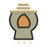
alchemy_furnace_t2 ancient_fruitancient_gear
ancient_fruitancient_gear ancient_golem_core
ancient_golem_core ancient_vine
ancient_vine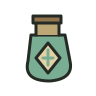
antidote_pill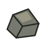
ashawakening_altar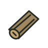
bamboo basalt
basalt beast_cage
beast_cage berry_bush
berry_bush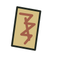
bind_talisman blood_pill
blood_pill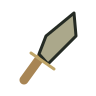
broken_sword calm_pill
calm_pill campfire
campfire carved_stone
carved_stone charcoal
charcoal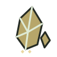
charged_thunder_crystal charred_food
charred_food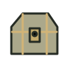
chest cinnabar
cinnabar conceal_pill
conceal_pill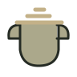
cooking_pot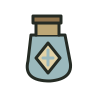
cool_jade_pill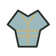
cool_vest crow_feather
crow_feather damp_wood
damp_wood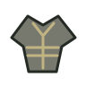
dark_iron_armor dark_iron_ore
dark_iron_ore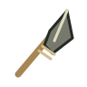
dark_iron_spear detox_soup
detox_soup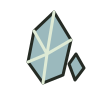
eternal_ice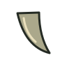
fang farm
farm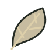
feather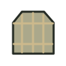
filled_beast_cagefirepitfire_berry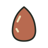
fire_eggfire_featherfire_lotus flint
flint flint_axe
flint_axe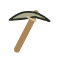
flint_pickaxe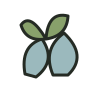
frost_rice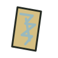
frost_talisman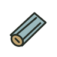
frost_woodfruit_salad fruit_soup
fruit_soup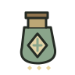
full_awakening_pillfur fur_coatfur_hat
fur_coatfur_hat ghost_general_core
ghost_general_core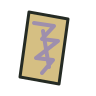
ghost_mask_talisman glow_mushroom
glow_mushroom grass
grass grass_armor
grass_armor gravel
gravel guest_altar
guest_altar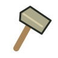
hammer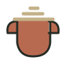
hand_warmer hard_wood
hard_wood heart_demon_essence
heart_demon_essence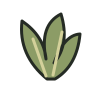
herb ice_block
ice_block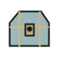
ice_cellar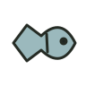
ice_fishice_structureice_wolf_pelt incense
incense lava_scale
lava_scale lightning_rod
lightning_rod lightning_ward_talisman
lightning_ward_talisman light_pillar
light_pillar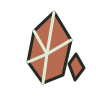
magma_crystal meat
meat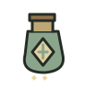
mid_awakening_pill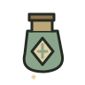
minor_awakening_pill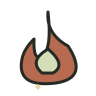
minor_blood_essence monkey_fur
monkey_fur monster_core
monster_core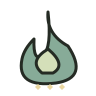
monster_core_high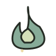
monster_core_low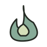
monster_core_mid mud_clump
mud_clump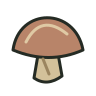
mushroom mushroom_stew
mushroom_stew mutant_fruit
mutant_fruit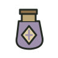
night_pill pierce_mist_pill
pierce_mist_pill pinecone
pinecone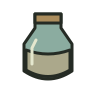
plain_water puppet_chop
puppet_chop puppet_haul
puppet_haul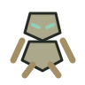
puppet_mine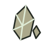
quartz reed
reed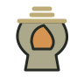
refining_forge resin
resin resurrection_altar
resurrection_altar revival_pillroasted_fruit
revival_pillroasted_fruit roasted_meat
roasted_meat roasted_mushroom
roasted_mushroom roasted_rootrope
roasted_rootrope ruin_mushroom
ruin_mushroom ruin_shard
ruin_shard rune_crystal
rune_crystal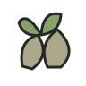
seed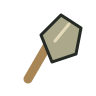
shovel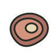
small_meat snowballsnow_lotus
snowballsnow_lotus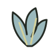
snow_mosssoul_herb soul_lantern
soul_lantern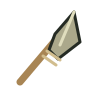
spearspirit_feastspirit_fruit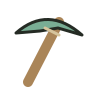
spirit_pickaxe spirit_rice
spirit_rice spirit_rice_seed
spirit_rice_seed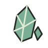
spirit_stone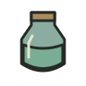
spirit_water spirit_water_co_vanspirit_water_huyen_bangspirit_water_loi_tri
spirit_water_co_vanspirit_water_huyen_bangspirit_water_loi_tri spirit_water_thanh_mocspirit_water_u_minh
spirit_water_thanh_mocspirit_water_u_minh spirit_water_xich_viemspoiled_foodstake
spirit_water_xich_viemspoiled_foodstake steamed_rootsstone
steamed_rootsstone straw_hat
straw_hat swift_pill
swift_pill talisman_chest
talisman_chest talisman_desktalisman_paper
talisman_desktalisman_paper thick_furthunder_crystalthunder_furthunder_herbtorch
thick_furthunder_crystalthunder_furthunder_herbtorch true_sight_talisman
true_sight_talisman twig
twig twig_bush
twig_bush volt_mosswarm_yang_pillwaste_pill
volt_mosswarm_yang_pillwaste_pill water_array
water_array water_bottlewater_root
water_bottlewater_root water_ward_pill
water_ward_pill wild_root
wild_root wood
wood workbenchwraith_essenceyin_soul_crystalui-health
workbenchwraith_essenceyin_soul_crystalui-health ui-staminaui-daoui-tools
ui-staminaui-daoui-tools ui-light
ui-light ui-survival
ui-survival ui-combatui-buildings
ui-combatui-buildings ui-talismans
ui-talismans ui-puppetsui-bookui-beastui-sense
ui-puppetsui-bookui-beastui-sense ui-handui-body
ui-handui-body ui-head
ui-head